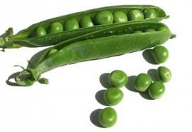

Arvejas

La siembra
Fecha: Principios de agosto a setiembre (hay dos variedades: de enrame y enanas).
Forma: Directamente sobre el cantero, en filas.
Distancias: Dejar 20 centímetros entre plantas y 70 centímetros entre filas.
Cantidad de semillas (para 10m2): 30 a 40 gramos.
¿Qué tenemos que hacer para cuidar nuestro cultivo?
La cosecha
Producción de semillas
Elegir plantas sanas, grandes y fuertes y dejarlas para que den semilla. Se dejan madurar las chauchas en la planta, para luego sacar los granos que se usarán como semilla.